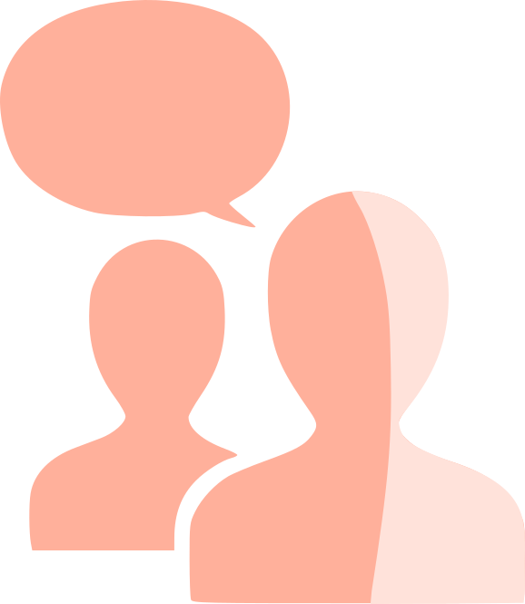

Discussion
Lieu: Chartrexpo
Date et horaire:
le 15 novembre de 14h à 16h
Venez discuter avec nous ou poser des questions sur des sujets diverses.
Si vous avez adopté un animal chez nous, vous pouvez nous en faire part.

Adoption
Vous pouvez adopter un animal dans nos centres d'accueil. Une pièce d'identité et
un justificatif de domicile seront exigés. Nous viendrons chez vous pour vérifier l'environnement
dans lequel l'animal va évoluer. En cas de problème, nous le reprendrons.
Sensibilisation
Nous organisons des campagnes de sensibilisation un peu partout en France
pour informer les personnes des dangers d'une adoption sur un coup de tête
et l'importance de bien y réfléchir.
Nous serons prochainement à Reims, Strasbourg, Renne et Orléans